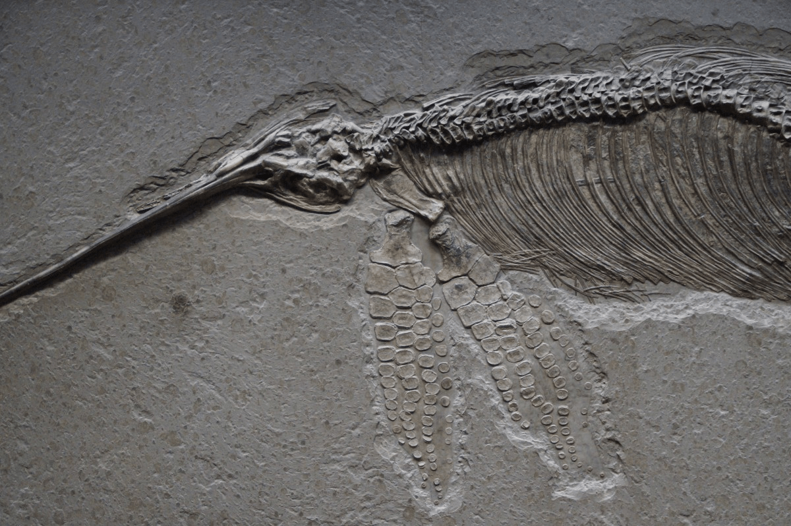
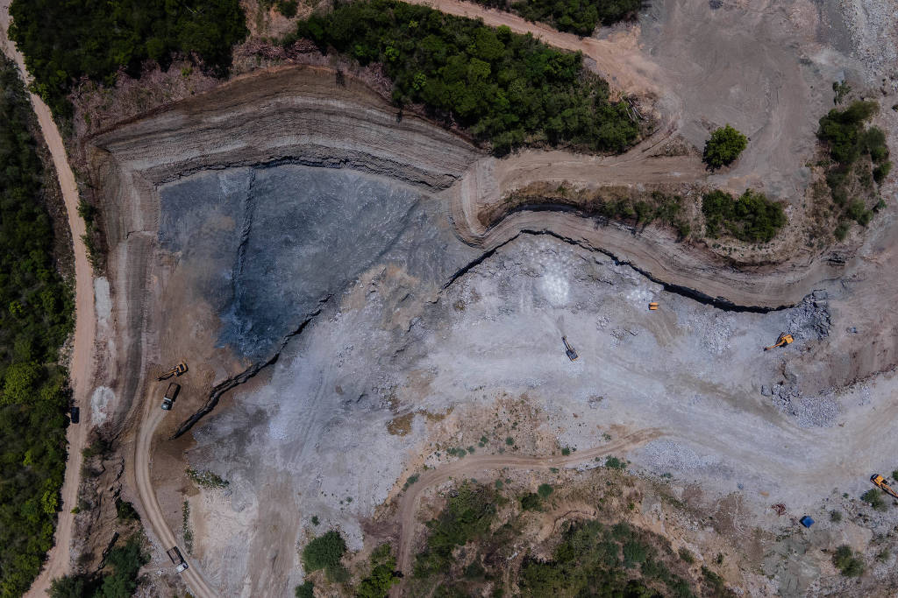

O que é Paleontologia?
Paleontologia, do grego, significa "estudo de seres antigos". Paleontologia, logo, é a ciência que estuda a vida pré-histórica da Terra. As evidências são fósseis, plantas, fungos, bactérias e rochas, assim podemos recriar a Terra como a mesma era no passado, entendendo como a vida era e funcionava em diferentes épocas. Vale considerar que paleontologia não se trata apenas de dinossauros, porém o estudo de qualquer forma de vida extinta.

Introdução
Quando pensamos em paleontologia, (geralmente) nos vem em mente dinossauros, escavações e museus, porém como citado antes, paleontologia não é apenas dinossauros. Para uma introdução, preciso deixar claro que o passado da vida da Terra começa há aproximadamente 4 bilhões de anos atrás e se extende até hoje. As eras que a paleontologia atua são, em ordem de mais antiga à mais atual: Pré-Cambriana, Paleozóica, Mesozóica e Cenozóica, esta é a que vivemos hoje.
| Era: | Pré-Cambriano | Paleozóico | Mesozóico | Cenozóico |
|---|---|---|---|---|
| Duração: | 4,6 Ba. - 541 Ma. | 541 Ma. - 252 Ma. | 252 Ma. - 66 Ma. | 66 Ma. - Hoje. |
| Tipos de vida: | Bactérias, arqueas, cianobactérias e estromatólitos | Invertebrados marinhos, corais, florestas e artrópodes | Dinossauros, répteis marinhos e voadores, insetos, mamíferos primitivos e aves | Mamíferos terrestres e marinhos, aves, peixes, insetos, anfíbios, répteis, plantas, florestas e ecossistemas marinhos |
Períodos da era Mesozóica
A era Mesozóica se divide em três períodos: Triássico, Jurássico e Cretáceo. Esses períodos são importantes porque dividem grandes mudanças na vida, no clima e na geologia da Terra. Os períodos começam e terminam com extinções em massa e recuperação da diversidade, cada um com características distintas. Abaixo um resumo em forma de lista das principais características de cada período.
- Triássico: 252 Ma. - 201.3 Ma.
- 80% do nível de oxigênio atmosférico atual
- Muito mais CO² na atmosfera
- Temperatura média da Terra 3°C acima da atual
- Fauna:
- Dicinodontes e cinodontes
- Pequenos dinossauros
- Anfíbios e répteis
- Arcossauros
- Flora:
- Ginkgos e outras gimnospermas
- Samambaias e licófitas
- Jurássico: 201.3 Ma. - 145 Ma.
- 130% do nível de oxigênio atmosférico atual
- Ainda mais CO² na atmosfera do que no período Triássico
- Temperatura média da Terra 3°C acima da atual
- Fauna:
- Dinossauros (mais evoluídos)
- Répteis voadores, terrestres e marinhos
- Plesioussauros, peixes e tubarões
- Mamíferos primitivos
- Protoaves e aves primitivas
- Anfíbios e insetos
- Flora:
- Coníferas gigantes
- Cicadáceas e ginkgos
- Primeiras angiospermas
- Samambaias e gimnospermas
- Cretáceo: 145 Ma. - 66 Ma.
- 150% do nível de oxigênio atmosférico atual
- Menos CO² na atmosfera do que no Jurássico
- Temperatura média da Terra 4°C acima da atual
- Fauna:
- Dinossauros no auge
- Pequenos mamíferos
- Anfíbios e répteis
- Insetos e artrópodes
- Aves primitivas (aves modernas já começavam a surgir)
- Tubarões, quelônios e raias
- Flora:
- Samambaias
- Gimnospermas
- Angiospermas
- Plantas aquáticas
- Coníferas e cicadáceas
Paleontologia no Brasil
A paleontologia no Brasil é rica, com fósseis que datam da era Pré-Cambriana até a Cenozóica, guardando informações sobre o ecossisteama pré-histórico da América do Sul. As regiões Sul e Sudeste são bem famosas pelos fósseis e o Nordeste também é reconhecido por fósseis de pterossauros, os répteis voadores. Dois exemplos de fósseis famosos são o de Staurikosaurus, um dos primeiros dinossauros do triássico no Rio Grande do Sul e Irritator, um carnívoro do Cretáceo no Nordeste. O Brasil também possui fósseis de grandes mamíferos extintos do Cenozóico, coníferas, samambaias e outras plantas do Mesozóico, além de angiospermas e vegetação do Cenozóico mais semelhantes às atuais.

Bônus
Para mais conhecimento sobre Paleontologia além do conteúdo deste site, assista ao vídeo a seguir!